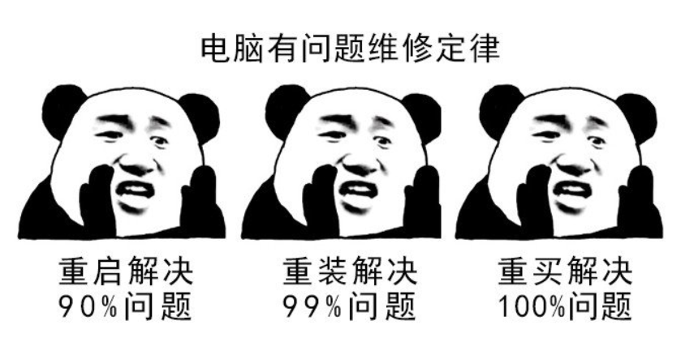
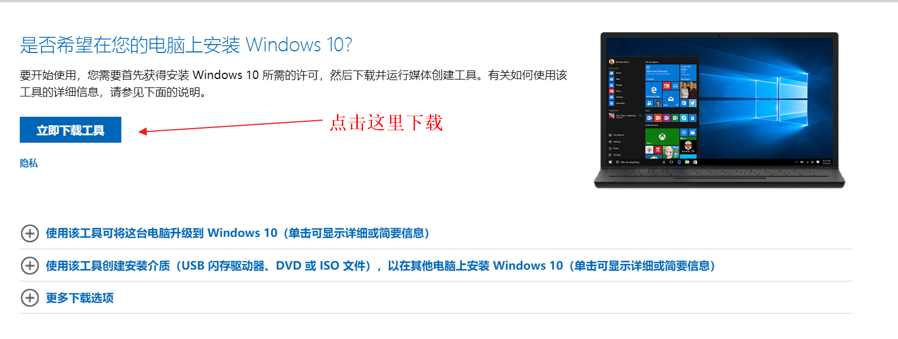
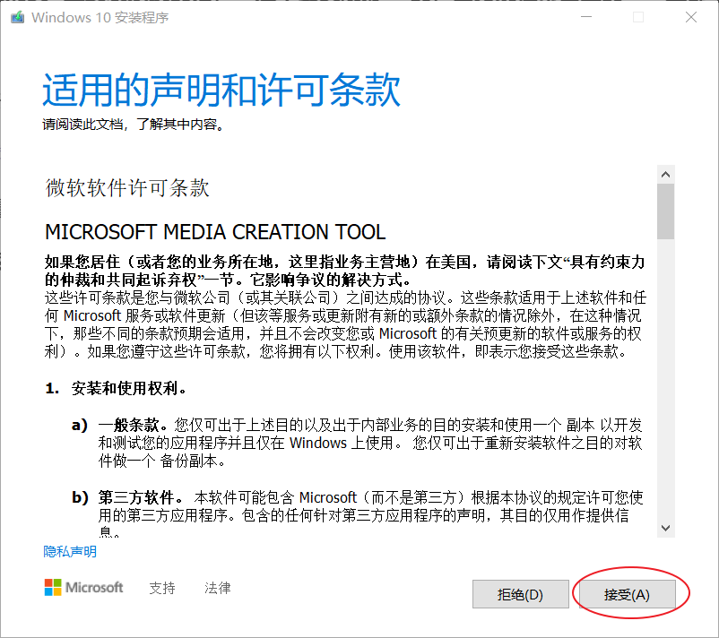
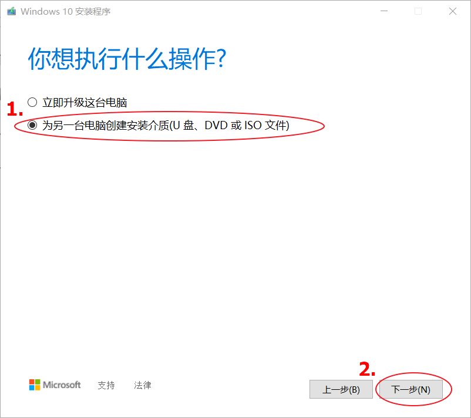
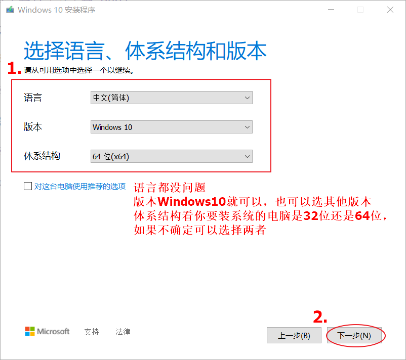
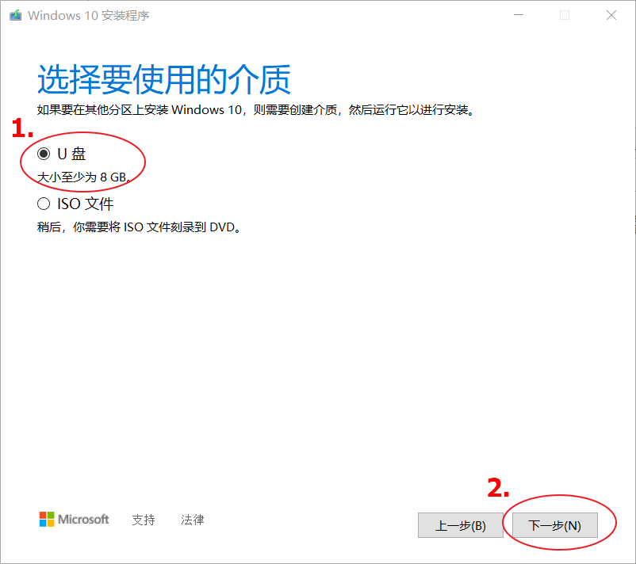
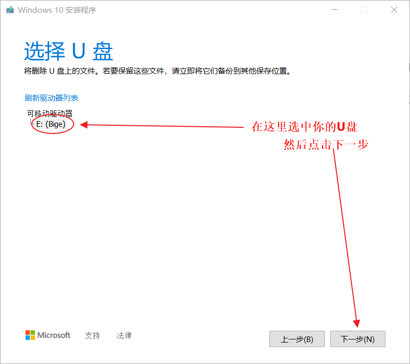
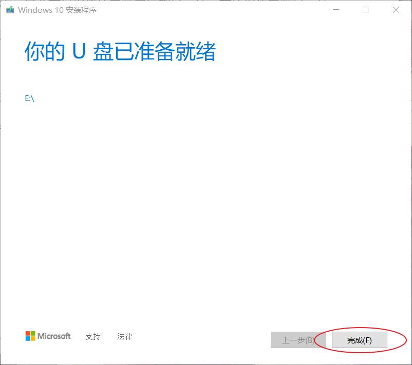

哈喽，这里是大鹅，这次带来的是Windows系统安装。
组装完电脑后，电脑是不会自己带系统的，所以如果你要组装一台电脑，请准备好安装系统的工作。
如果啥也不会，动手能力也不行，甚至电脑都装不起来，请到你家附近的电脑店中去用钱解决，一般100、200都有可能。

这类人啊，肯定不会看这类文章的，所以我们不说了
既然没有上述的第三种人看，那么只推荐安装微软官网的系统。
如果你觉得自己很nb、很厉害，不屑于装微软官方的系统想安装第三方“优化过的”、“精简过的”的Windows系统也不是不可以，但是就要小心风险。
装别怂，怂别装~~
安装系统可以直接硬盘启动安装，U盘启动安装，光盘启动安装（DVD）。
硬盘启动安装一般是自己重装系统才会选择的方法，如果是组装电脑想新装系统是没法使用的，因为你的硬盘上啥也没有启动个p。
光盘启动安装的话需要一张系统光盘（买的话5-10） 或者 自己做一张系统光盘（你需要空白DVD和一个DVD刻录机），如果你的电脑有光驱的话。只有你家祖传的电脑才会有光驱，所以现在也很少使用这种安装方法。如果你想用光盘给你的祖传电脑装一个系统的话，可以去你家附近的电脑店或网上买个盗版系统盘。
U盘启动安装是现在最常用的安装方式，这种方式几乎适用于任何电脑的系统安装。所以下面就要说明如何用U盘制作Windows系统安装盘。
卧槽 我这华为的本本没有usb接口，我转接线也没找到啊！！！
选一个空间足够的就可以，而且不要有重要内容，因为U盘会被格式化。
空间是否足够可以看Windows官网的说明。
目前(win10 2004版)是至少要8G。
如果你现在要购买U盘安装系统的话，一定不要买刚好8G的，因为现在市面上的8GU盘都不到8G
有了U盘后，就可以去Windows官网下载安装程序。

下载可能会很慢。

你能不点接受？？？

选择第二个，然后按下一步。
简直保姆级教程

版本问题主要涉及到后面的激活系统，但如果你不通过官方激活，也就不用管那么多，直接Windows10就好。
关于体系结构，只要不是祖传的电脑应该都是64位，有的祖传电脑是32位。

没啥说的。

点完之后，安心等待，喝个茶吃个包。

点击完成后，我们的系统安装盘就整好了！
首先，
把制作的系统安装U盘插入要安装系统的电脑。
然后，
进入电脑的BIOS系统中调成USB引导启动。
最后，
BIOS保存重启后，进入Windows安装界面根据提示即可顺利安装。
到此我们无聊的Windows系统安装就结束了。